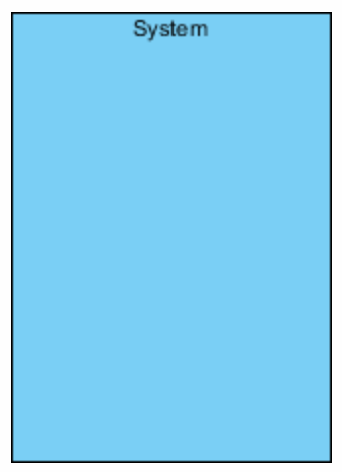
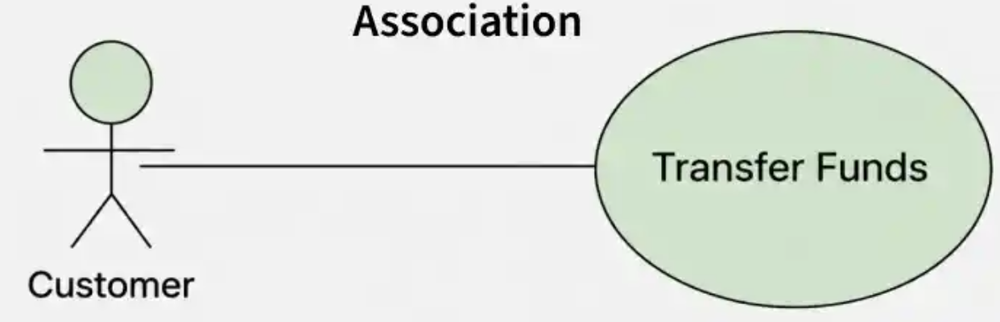
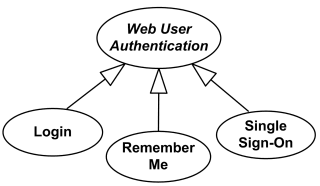
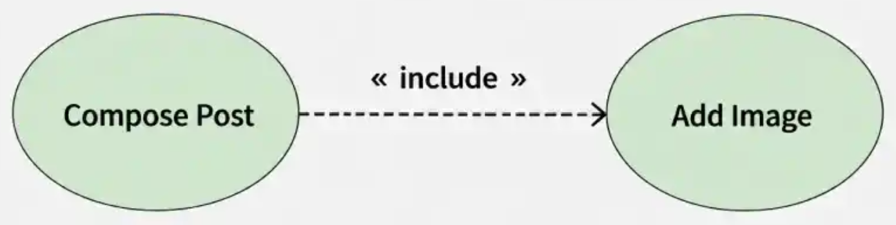
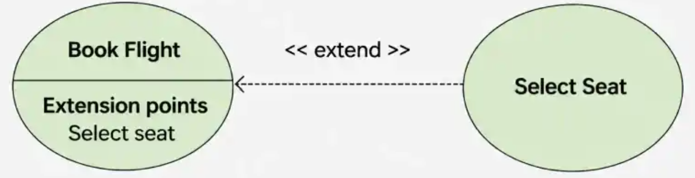
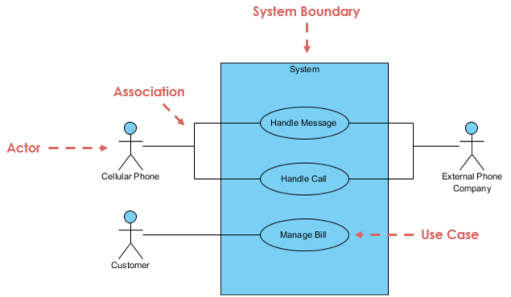

البدء من متطلبات النظام
نحصل على سيناريو حالة الاستخدام (Use Case Scenario) من متطلبات النظام (System Requirements).
مخطط حالات الاستخدام
يُستخدم مخطط حالات الاستخدام لتحديد المتطلبات الوظيفية للنظام وتوضيح التفاعل بين الجهات المتفاعلة (Actors) والنظام. غالبًا ما نبدأ به لتسهيل فهم متطلبات العميل وتحديد الوظائف التي يتوقعها من النظام قبل الانتقال إلى تفاصيل التصميم والتنفيذ.
| العنصر | رمز | الشرح |
|---|---|---|
| Actor |

|
يمثّل مستخدمًا أو نظامًا خارجيًا يتفاعل مع النظام لتحقيق هدف معين. يرتبط إما بـ Actor آخر عن طريق Generalization، أو بـ Use Case عن طريق Association. |
| Use Case |

|
تمثّل وظيفة أو خدمة يقدّمها النظام للجهة المتفاعلة، وتُرسم عادةً على شكل بيضاوي. ترتبط بحالات استخدام أخرى عن طريق Generalization أو Include أو Extend. |
| System Boundary |
 |
يحدّد نطاق النظام؛ توضع حالات الاستخدام داخل حدوده، بينما تظهر الجهات المتفاعلة خارجه. |
| Association |
 |
خط يوضّح وجود علاقة تفاعل بين Actor وUse Case. |
| Generalization |
 |
علاقة تعميم وتخصيص يمكن أن تربط Actor بآخر، أو Use Case بأخرى. |
| Include Relationship |
 |
علاقة توضّح تضمين سلوك حالة استخدام داخل حالة استخدام أخرى. |
| Extend Relationship |
 |
علاقة توضّح إضافة سلوك اختياري أو مشروط إلى حالة استخدام أساسية. |
نحصل على سيناريو حالة الاستخدام (Use Case Scenario) من متطلبات النظام (System Requirements).
إذا كانت قاعدة البيانات داخلية وجزءًا من النظام، فلا تُعرض باعتبارها Actor.
عادةً نربط الـ Actor بحالة الاستخدام الأساسية (Base Use Case)، وقد يرتبط في بعض الحالات بحالات استخدام مرتبطة بعلاقات Include أو Extend بحسب طبيعة التفاعل.
يوضع رأس السهم عند حالة الاستخدام التي تنفذ أولا.
يتجه سهم Include من حالة الاستخدام
الأساسية إلى الحالة المضمّنة، بينما يتجه سهم
Extendمن حالة الاستخدام الممتدّة إلى الحالة
الأساسية.
اتجاه السهم يوضّح العلاقة، وليس
بالضرورة ترتيبًا زمنيًا لتنفيذ حالات الاستخدام.
يمكن إنشاء مخطط تسلسل (Sequence Diagram) ومخطط نشاط (Activity Diagram) لكل Use Case عند الحاجة إلى توضيح التفاعلات أو خطوات سير العمل بمزيد من التفصيل.
